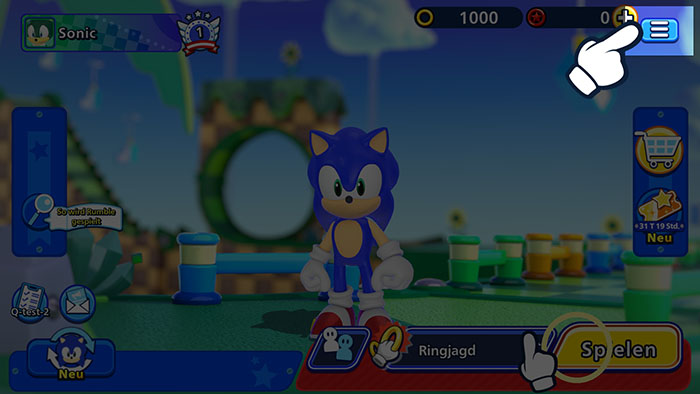
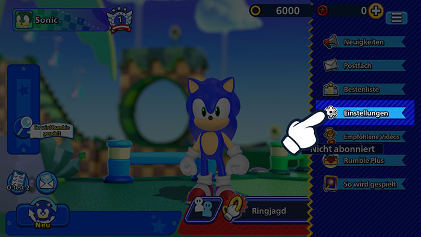
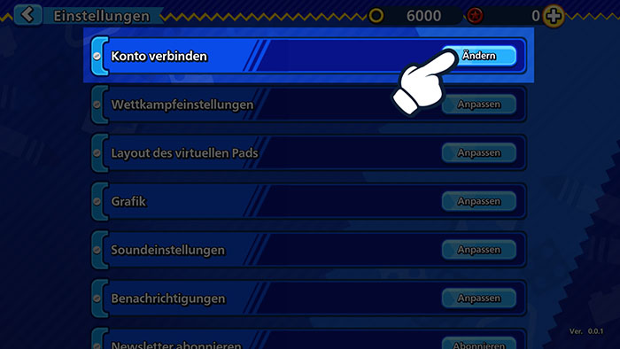
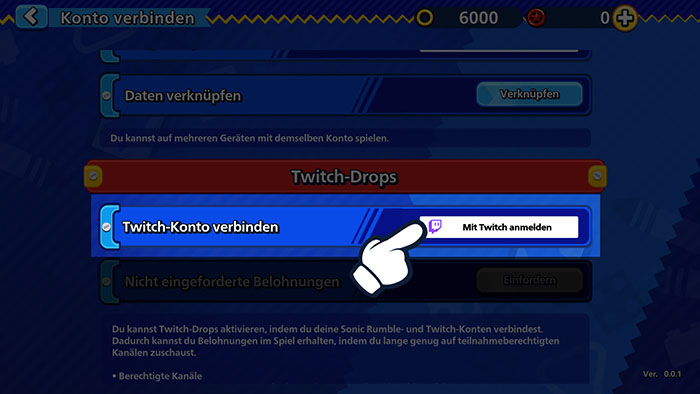
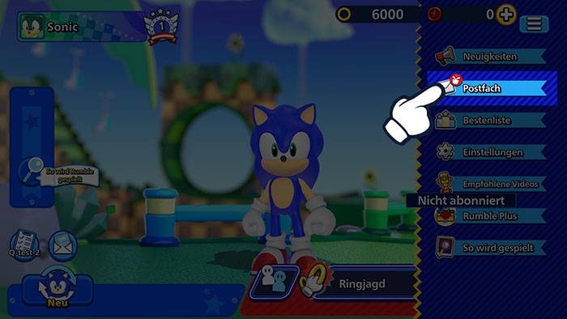
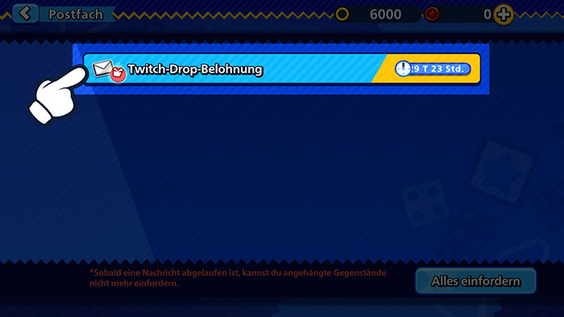

Twitch-DropsSchaue Livestreams an und erhalte Belohnungen im Spiel!
Twitch-DropsSchaue Livestreams an und erhalte Belohnungen im Spiel!
Verbinde jetzt dein Twitch-Konto!
So verbindest du dein Konto
1Klicke auf die Menü-Schaltfläche in Sonic Rumble.

2Gehe zu den Einstellungen.

3Klicke auf „Konto verbinden“.

4Wähle „Twitch-Drops“ und „Mit Twitch anmelden“, um dich mit deinem Twitch-Konto anzumelden.

5Dadurch wird dein Twitch-Konto mit deinem Sonic Rumble-Konto verbunden.
So holst du Belohnungen ab
1Klicke auf die Menü-Schaltfläche in Sonic Rumble.

2Gehe zu deinem Postfach, um deine Belohnungen zu sehen.

*Es kann ein Problem geben, wenn Belohnungen während Wartungsarbeiten an dein Postfach gesendet werden.
Wenn ein solches Problem auftritt, gehe zum Menü > Einstellungen > Konto verbinden > Twitch-Drops und klicke auf die Schaltfläche „Beanspruchen“, um die Belohnungen erneut an dein Postfach zu senden.
FAQ
- QWas sind Twitch-Drops?
- AEin Eventtyp, bei dem du Belohnungen im Spiel verdienen kannst, indem du Livestreams auf Twitch ansiehst.
Du kannst teilnehmen, indem du einfach dein Sonic Rumble-Konto mit deinem Twitch-Konto verbindest. - QWie erhalte ich Belohnungen?
- AAktiviere die Twitch-Drops-Funktion und schau dir Sonic Rumble-Livestreams an, die die Bedingungen erfüllen, um deinen Drops-Fortschritt zu füllen. Du kannst Belohnungen erhalten, sobald die Leiste voll ist.
- QWie kann ich sehen, ob ich derzeit an Twitch-Drops-Events teilnehme?
- ARufe die Twitch-Inventarseite hier auf, um alle Twitch-Drops-Events zu überprüfen, an denen du teilnimmst, und die Belohnungen anzusehen, die du erhalten hast.
- QWie lange dauert es, bis ich Belohnungen von Drops erhalte?
- ABelohnungen werden innerhalb von 24 Stunden an dein Postfach im Spiel gesendet.
Wenn du dein Konto nach Erhalt deiner Belohnungen trennen möchtest, denke daran, die Belohnungen in deinem Sonic Rumble-Konto zu beanspruchen, bevor du dies tust. - QWenn ich mehrere Sonic Rumble-Konten besitze, kann ich Belohnungen für alle beanspruchen?
- ATwitch-Drops-Belohnungen können nur einmal beansprucht werden. Jeder Twitch-Account kann auch nur mit einem Sonic Rumble-Konto gleichzeitig verbunden werden.
Die gleiche Art von Belohnung kann nicht mehr als einmal für jedes Sonic Rumble-Konto und Twitch-Konto beansprucht werden.